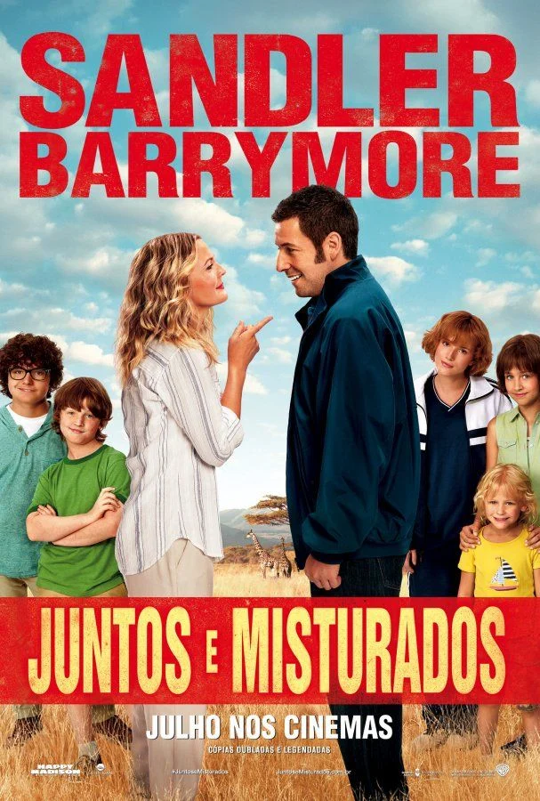
Juntos e Misturados
Dois pais solteiros que se odeiam acabam passando férias juntos com seus filhos e, no meio de confusões e momentos divertidos, acabam se aproximando e criando uma conexão inesperada.

Dois pais solteiros que se odeiam acabam passando férias juntos com seus filhos e, no meio de confusões e momentos divertidos, acabam se aproximando e criando uma conexão inesperada.
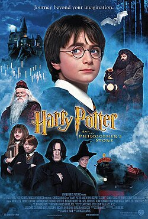
Um garoto descobre que é bruxo, entra em uma escola de magia e enfrenta o vilão Voldemort enquanto cresce ao lado dos amigos.
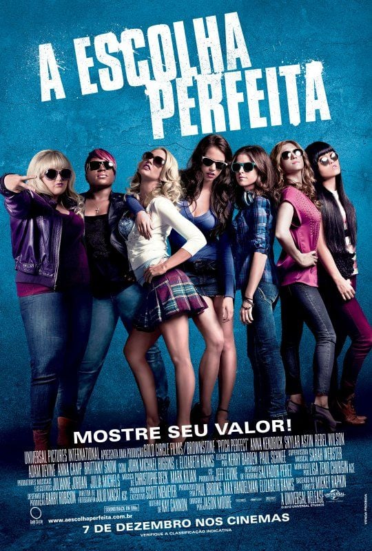
Um grupo de garotas forma um time de canto a capella, enfrenta rivais e cresce juntas através da música e da amizade.
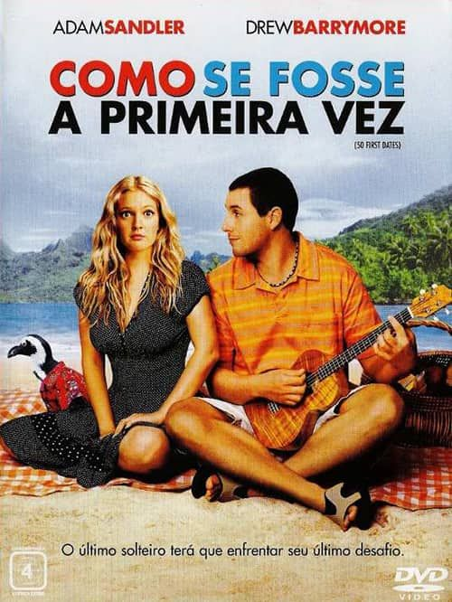
Um homem se apaixona por uma mulher que perde a memória todos os dias e precisa reconquistá-la diariamente, para fazê-la se apaixonar de novo
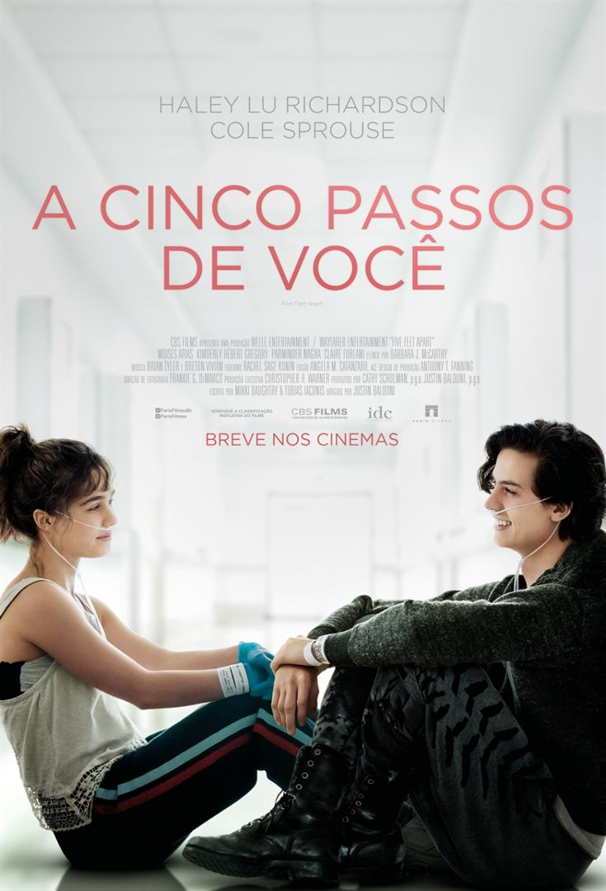
Dois jovens com doenças graves se conhecem no hospital e acabam se apaixonando, sabendo que precisam manter distâcia, eles tentam aproveitar o tempo juntos da melhor forma possível.
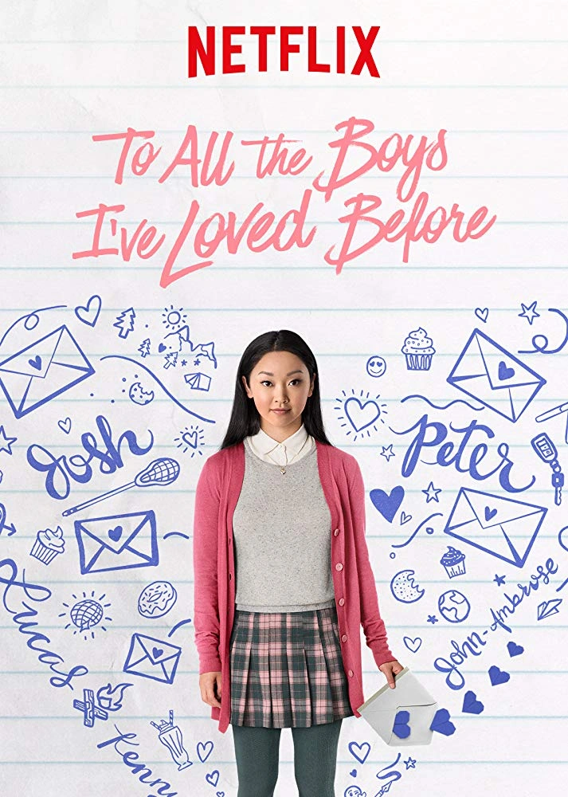
Uma adolescente tem suas cartas de amor secretas enviadas e acaba vivendo romances inesperados.
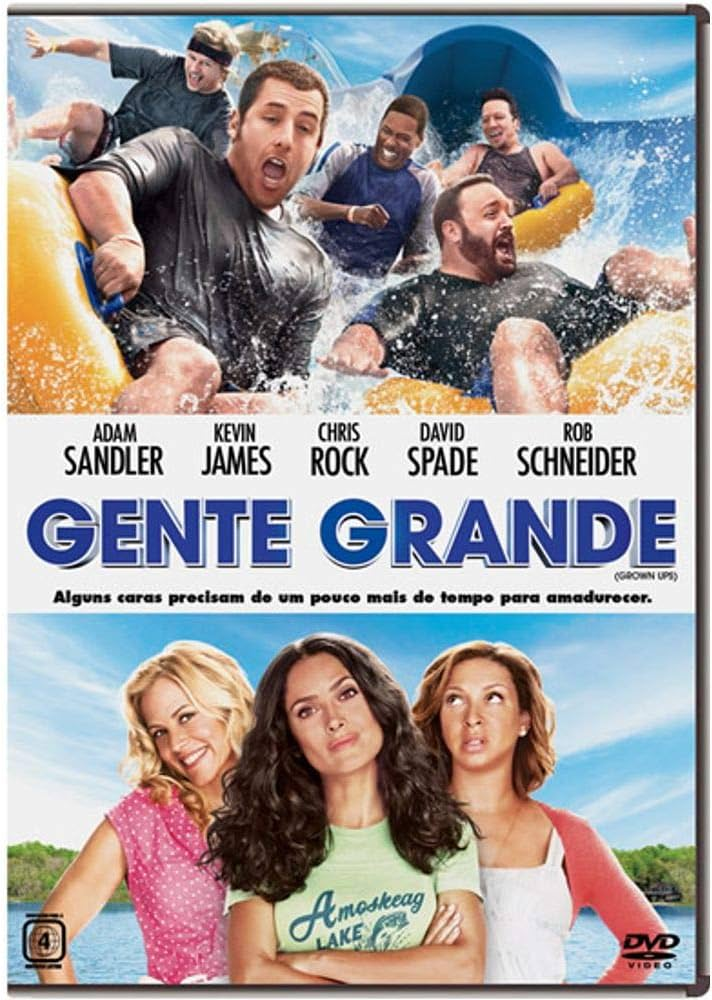
Amigos de infância se reencontram com suas famílias, vivendo situações engraçadas que mostram o valor da amizade e da família.
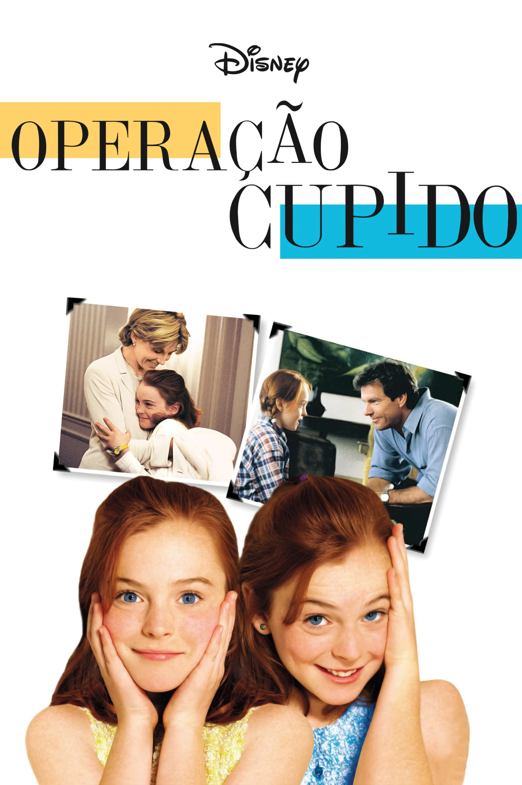
Duas gêmeas separadas ao nascer se reencontram por acaso e bolam um plano para trocar de lugar e tentar juntar seus pais novamente.
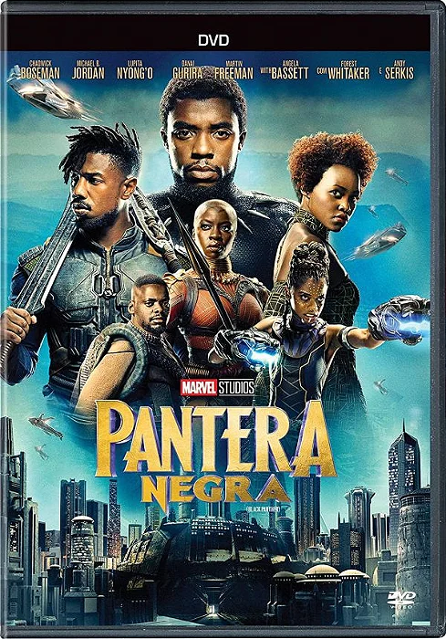
T’Challa assume o trono de Wakanda, e precisa lidar com responsabilidades como rei. Ele enfrenta um inimigo que questiona as decisões de Wakanda e propõe mudanças radicais.

Um homem insatisfeito com sua vida cria um clube secreto onde homens lutam para liberar suas frustrações. Mas o grupo cresce, fugindo do controle e trazendo consequências inesperadas.
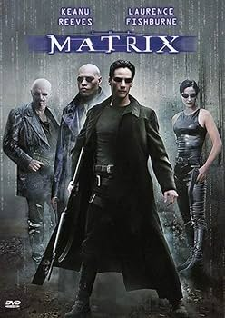
Neo descobre que vive em uma simulação. Com a ajuda de aliados, ele passa a lutar contra esse sistema e a entender seu papel como possível salvador.
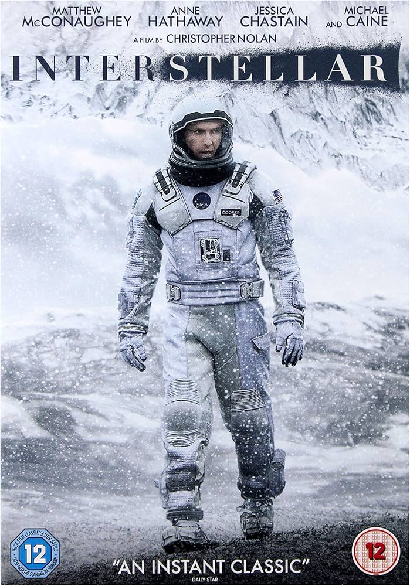
Astronautas viajam pelo espaço em busca de um novo planeta enquanto enfrentam o tempo e a distância da família.
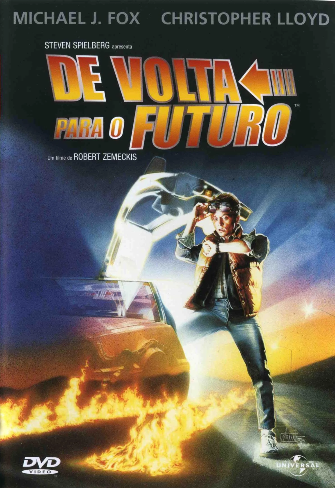
Marty viaja acidentalmente para o passado de seus pais. Para não desaparecer, ele precisa fazer com que eles se apaixonem novamente e ainda encontrar um jeito de voltar ao futuro.
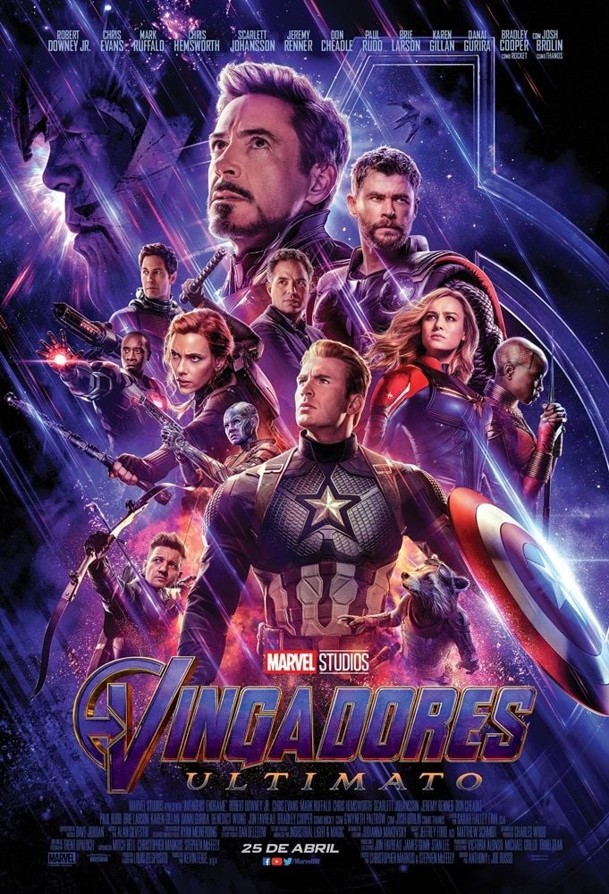
Após Thanos eliminar metade da vida no universo, os heróis restantes elaboram um plano para viajar no tempo e recuperar as Joias do Infinito, tentando reverter a destruição e restaurar tudo.
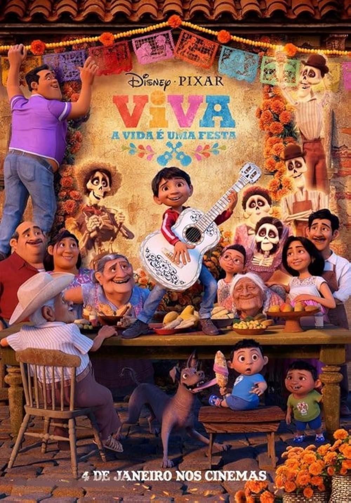
Miguel, apaixonado por música, vai ao mundo dos mortos, onde descobre segredos de sua família. E aprende sobre a importância das raízes, da memória e de valorizar quem veio antes.
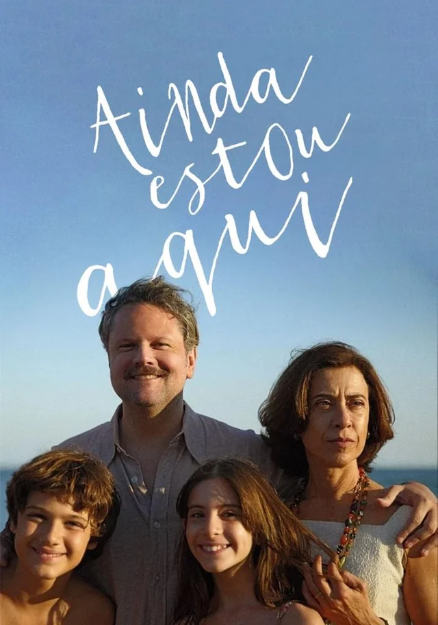
Baseado em fatos reais, o filme mostra a luta de Eunice Paiva durante a ditadura militar no Brasil após o desaparecimento de seu marido. A história aborda memória, injustiça e a busca por verdade.